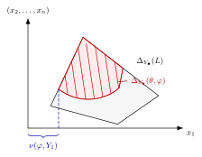

Theorem 10.3.27. Let $E$ be a prime divisor on $X$. Let $Y_{\bullet }$ be an admissible flag with $E=Y_1$. Then
10.80
\begin{equation} \label{eq:numinOk} \nu (\varphi ,E)=\min _{x\in \Delta _{Y_{\bullet }}(\theta ,\varphi )}x_1. \end{equation}
Chapter 16 · Sections, graded series, and Okounkov bodies · Tag 6EC7E7A8EF44
Theorem 10.3.27. Let $E$ be a prime divisor on $X$. Let $Y_{\bullet }$ be an admissible flag with $E=Y_1$. Then
The picture in 10.1 illustrates the formula: the left supporting hyperplane of $\Delta _{Y_{\bullet }}(\theta ,\varphi )$ is given by $x_1=\nu (\varphi ,Y_1)$.

Proof. Replacing $\varphi $ by $P_{\theta }[\varphi ]_{\mathcal{I}}$, we may assume that $\varphi $ is $\mathcal{I}$-good.
Step 1. We first reduce to the case where $\varphi $ has analytic singularities.
By theorem 7.1.1, we can find a sequence $(\varphi _ j)_ j$ in $\mathrm{PSH}(X,\theta )_{>0}$ with analytic singularities such that $\varphi _ j\xrightarrow {d_ S}\varphi $. It follows from theorem 10.3.18 that
Therefore, by C.1.8,
In view of theorem 6.2.29, it suffices to prove (10.80) with $\varphi _ j$ in place of $\varphi $.
Step 2. Assume that $\varphi $ has analytic singularities. In view of proposition 10.3.19 and theorem 1.6.7, after replacing $X$ by a modification, we may assume that $\varphi $ has log singularities along an effective $\mathbb {Q}$-divisor $F$.
Perturbing $L$ by an ample $\mathbb {Q}$-line bundle by proposition 10.3.23, we may assume that $\theta _{\varphi }$ is a Kähler current. Therefore, $L-F$ is ample by 1.6.4. Finally, by rescaling, we may assume that $F$ is a divisor and $L$ is a line bundle.
By theorem 10.3.24, we know that
By definition,
In view of proposition 1.4.13, it remains to show that
The $\geq $ direction is trivial, we prove the converse. Observe that
As $L-F$ is ample, for large enough $k$, the line bundle $k(L-F)$ is globally generated. Hence we can choose a section of $k(L-F)$ which does not vanish at the generic point of $E$. Viewed as a section of $L^ k\otimes \mathcal O_ X(-kF)$, it has vanishing order exactly $\operatorname{ord}_ E(kF)$ along $E$. Therefore,
Thus, (10.81) follows. $\square$
Corollary 10.3.28. Let $\varphi ,\psi \in \mathrm{PSH}(X,\theta )_{>0}$. If
for all modifications $\pi \colon Y\rightarrow X$ and all admissible flags $W_{\bullet }$ on $Y$, then $\varphi \preceq _{\mathcal{I}} \psi $.
Proof. By theorem 10.3.27, the assumed inclusions imply that for every prime divisor $E$ on every modification $\pi $,
Hence $\varphi \preceq _{\mathcal{I}}\psi $ by proposition 6.1.5. $\square$
Corollary 10.3.29. Let $E$ be a prime divisor over $X$. Then
Proof. After replacing $X$ by a modification, we may assume that $E$ is a prime divisor on $X$. Note that since $X$ is projective, we can always find an admissible flag with $E$ being the first component.
Then (10.82) follows from theorem 10.3.27 and the fact that $\Delta _{Y_{\bullet }}(\theta ,V_{\theta })=\Delta _{Y_{\bullet }}(L)$ for any admissible flag $Y_{\bullet }$ on $X$. $\square$